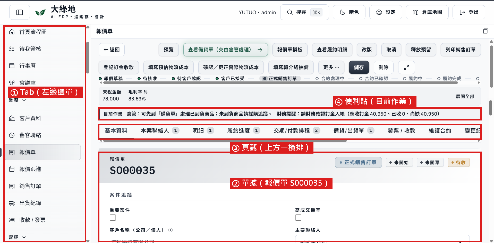
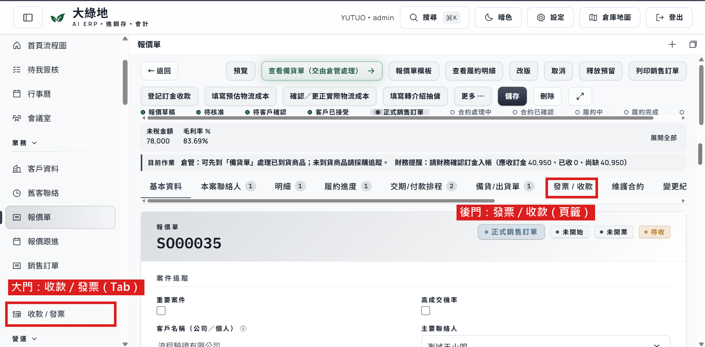

頁籤權限，用一個資料夾講完
一句話：一張單據就像一個案件資料夾，大家輪流在裡面寫，不用拆開。只要把少數幾頁上鎖，並且把後門關好。
2026-11-09｜共編稿：Notion 共編頁｜標記：事實推論待確認
1. 先把東西對上比喻
ERP＝一棟公司大樓
🚪 客戶資料
一間房間🚪 報價單
📁 S000035 這個案子
摘要列：毛利率
基本資料明細履約進度
備貨／出貨單發票／收款付款排程
變更紀錄
📝 目前作業：倉管請到「備貨單」處理
🚪 收款／發票
另一間房間| 比喻 | 系統裡叫 | 在哪 |
|---|---|---|
| 🚪 房間 | Tab | 左邊直排選單 |
| 📁 案件資料夾 | 一張單據 | 例：報價單 S000035 |
| 分隔頁 | 頁籤 | 資料夾打開後上方那一橫排 |
| 📝 便利貼 | 「目前作業」提示 | 單據上方，告訴下一棒去哪頁 系統已有 |
| 🔒 鎖 | 權限 | 看不到／只能看／可以改 |
在系統畫面上長這樣

2. 為什麼用頁籤分工，不拆資料夾？
因為我們的生意本來就是這樣跑的。一張單從報價到收款，中間由不同角色各自決定、各做一段：業務談內容，倉管安排出貨，財務確認收款。已跟廠商講
所以單據要跟著案子走，不跟著部門走。在同一個資料夾裡，用頁籤標清楚「這一頁歸誰填」，每個人打開就知道自己那頁在哪，比較不會找不到。
| 頁籤（分隔頁） | 主要誰填 |
|---|---|
| 基本資料、明細 | 業務 |
| 備貨／出貨單 | 倉管 |
| 發票／收款 | 財務 |
| 交期／付款排程、履約進度、維護合約 | 待定：可能不只一個角色 |
這張表是初稿範例 待 Jelena 確認。單據上的「目前作業」便利貼，再提醒下一棒該去哪一頁。
📁📁📁 那如果照部門拆開呢？
就違反了「一張單由多個角色接力」這件事：同一個案子被切成三份，誰都看不到全貌，要查一個案子得跑三間房間。另外拆開要改系統結構，可能加錢、延後上線。推論
3. 要擔心的只有兩件事
⚠️ 第一件：後門
同一份資料，系統裡常有兩個地方進得去。以收款資料為例：
- 大門：左邊選單的「收款／發票」（Tab）
- 後門：打開報價單後，上面那排頁籤裡的「發票／收款」

→ 只要一邊關了、另一邊沒關，就像大門鎖了、後門開著。收款業務本來就要看，所以這裡沒問題。
真正要小心的是毛利。報價單最上面的摘要列，直接秀「毛利率 83.69%」。就算妳把跟利潤有關的報表都關了，業務一打開報價單還是看得到。報價單畫面要問 Ian 能不能遮
規則一句話：單據裡頁籤的鎖，不能比左邊 Tab 的鎖鬆。
⚠️ 第二件：只遮畫面
像把文件用紙蓋起來，但影印機還印得出來。畫面藏了，報表、匯出、搜尋還撈得到，就等於沒藏。
4. 鎖要怎麼上？三層
| 層 | 比喻 | 怎麼設 |
|---|---|---|
| 1. Tab | 🚪 房間鑰匙 | 每個角色都要設：進得了哪幾間 |
| 2. 頁籤 | 🔒 分隔頁上鎖 | 平常不用管，進得了房間就翻得到。只有跟利潤有關的另外鎖：毛利率、成本這類「賺多少」的資訊；變更紀錄大家只能看。發票／收款、付款排程、維護合約，業務要看得到 |
| 3. 核准按鈕 | 🔏 印章 | 沿用原本的設計 |
注意：毛利率不是一頁，是摘要列上的一格數字，所以要能「單獨遮住一格」，光鎖頁籤不夠。成本在系統裡是一頁還是一格，也要問 Ian。待確認
5. 只有我們這樣嗎？不是
- 微軟的 ERP：「能不能開這種單」和「某一格能不能看」分開設。同一張單，不同人看到的不一樣。官方文件
- Odoo（很多人用的 ERP）：可以設「這一頁只有某些人看得到」，還有人專門賣外掛做這件事。論壇與外掛
- SAP：曾經把一個功能拆成好幾個小畫面，新人好上手，但熟手變慢，有財務要求換回舊的。顧問文章 → 支持「不拆」。
連結都在 Notion 共編頁最下面。